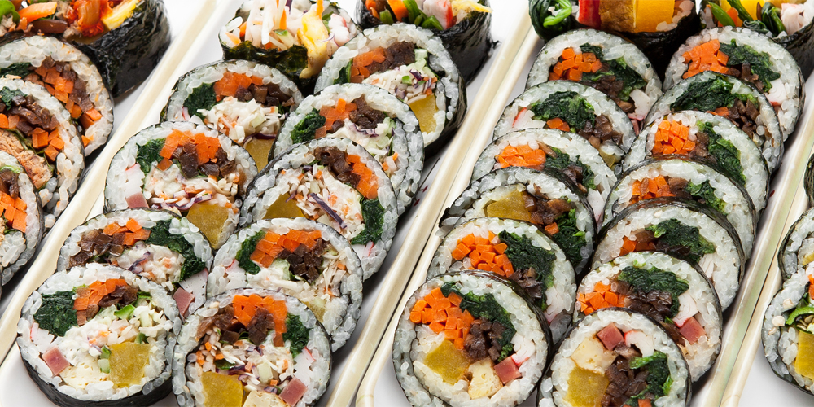
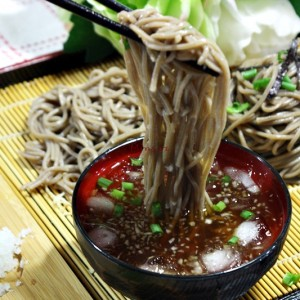
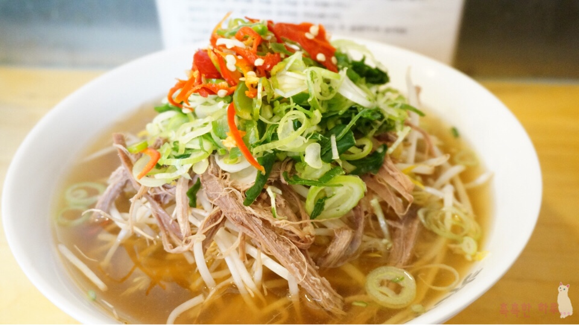
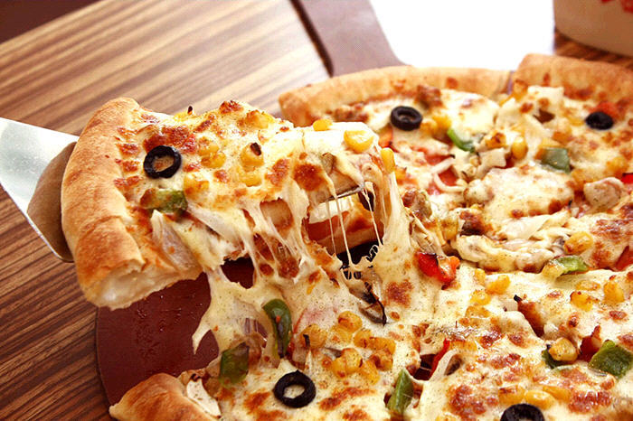

1. Homemade meal (집밥)
2. School food (김밥)

3. 김치찌개
4. 백반
5. 돈가스
6. 볶음밥
7. 소불고기

8. 제육덮밥
9. 된장찌개
10. 비빔밥
11. 순두부찌개
12. 짬뽕

13. 탕수육

14. 짜장면

15. 라면
16. 냉면

17. 쭈꾸미볶음
18. 편의점
19. 설렁탕
20. 초밥
21. 순대국
22. 소바

23. 우동
24. 알밥

25. 햄버거
26. 쌀국수

27. 떡볶이
28. 칼국수
29. 수제비
30. 쫄면
31. 피자

32. 부대찌개